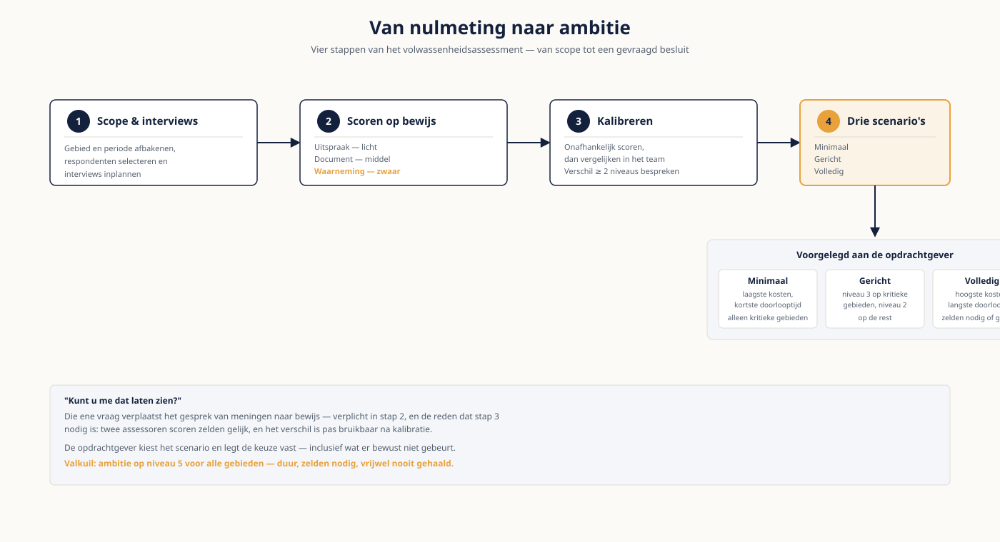

Deel 11 — Frameworks in de praktijk
Niveau 2 — Praktijk · Reader
Voorbereiding, geen vervanging
Deze cursusmap is onafhankelijk ontwikkeld door Ductus B.V. Ductus is niet gelieerd aan, geaccrediteerd door of goedgekeurd door DAMA International, IIBA, IAPP, de EDM Association of Microsoft.
Dit materiaal bereidt voor op de genoemde examens en vervangt het officiële examenmateriaal niet. Bodies of knowledge, handboeken en examenblueprints worden hier niet gereproduceerd; deelnemers schaffen die bronnen zelf aan.
Alle genoemde merken zijn eigendom van hun respectieve houders. Examengegevens gecontroleerd in augustus 2026 — verifieer vóór inschrijving bij de bron.
1. Waar dit deel over gaat
Niveau 1 leerde je de taal. Vanaf hier voer je opdrachten uit. Het eerste wat een opdrachtgever van je vraagt is bijna altijd hetzelfde: waar staan wij, en wat moeten we als eerste doen. Dat is een volwassenheidsassessment, en het is de opdracht waarmee de meeste consultants hun relatie met een klant beginnen — of verliezen.
Frameworks stranden zelden op inhoud. Ze stranden doordat iemand het hele raamwerk overneemt in plaats van het te snoeien, doordat scores op indrukken berusten in plaats van op bewijs, of doordat de rapportage eindigt bij een spinnenweb en niet bij een besluit. Dit deel gaat over die drie dingen.
Leerdoelen
- Je kiest een framework op grond van expliciete criteria en verantwoordt waarom de andere niet passen.
- Je snoeit een raamwerk tot wat de opdrachtgever daadwerkelijk kan dragen.
- Je voert een assessmentinterview waarin je bewijs verzamelt in plaats van meningen.
- Je onderscheidt drie bewijsniveaus en scoort daar consequent op.
- Je kalibreert scores tussen assessoren en herkent de systematische afwijkingen.
- Je vertaalt een nulmeting naar een verdedigbaar ambitieniveau per gebied.
- Je schrijft een assessmentrapportage die tot een besluit leidt in plaats van tot een discussie.
2. Het frameworklandschap
| Raamwerk | Uitgever | Kern | Wanneer passend |
|---|---|---|---|
| DAMA-DMBOK | DAMA International | Veertien kennisgebieden; naslagwerk en gemeenschappelijke taal | Als vertrekpunt en als taal — het is geen assessmentinstrument |
| DCAM | EDM Association | Acht componenten met capabilities en sub-capabilities; scorebaar | Bij een formeel assessment met vergelijkbaarheid over jaren |
| CMMI-DMM | ISACA / CMMI Institute | Volwassenheidsmodel met vijf niveaus, procesgericht | Bij organisaties die CMMI al kennen uit softwareontwikkeling |
| ISO 8000 | ISO | Normenreeks voor datakwaliteit, deels certificeerbaar | Bij ketenafspraken en leveranciersuitwisseling |
| ISO/IEC 38505 | ISO/IEC | Governance of data, bestuurlijk perspectief | Bij een gesprek op raad-van-bestuursniveau |
| CDMC | EDM Association | Cloud- en hybride omgevingen, met kerncontroles voor gevoelige data | Bij cloudmigratie of een hybride landschap |
Voor niveau 2 hoef je ze niet alle zes te beheersen. Wat je moet kunnen is uitleggen welk raamwerk waarvoor bedoeld is, en waarom je er één kiest. Een opdrachtgever die vraagt "waarom niet DCAM" verdient een antwoord dat verder gaat dan gewoonte.
Het meest gemaakte misverstand
Het DMBOK is geen assessmentraamwerk. Het beschrijft kennisgebieden, geen volwassenheidsniveaus met scoringscriteria. Wie op het DMBOK scoort, bedenkt zijn eigen schaal — dat mag, mits je het zegt en de schaal expliciet maakt. Doen alsof het uit het boek komt, is niet houdbaar zodra iemand het naslaat.
3. Een framework kiezen
Vijf criteria
- Doel van de meting: intern verbeteren, of extern verantwoorden? Verantwoording vraagt een raamwerk met vaste scoringscriteria.
- Vergelijkbaarheid: moet de meting over drie jaar herhaalbaar zijn, of ook vergelijkbaar met andere organisaties?
- Beschikbaarheid: DCAM en CDMC vereisen lidmaatschap van de EDM Association. Dat is een organisatiebesluit met kosten, geen detail.
- Bestaande taal: gebruikt de organisatie al CMMI, ITIL of een eigen volwassenheidsmodel? Aansluiten verslaat introduceren.
- Draagkracht: hoeveel tijd kunnen respondenten vrijmaken? Honderd sub-capabilities scoren vraagt weken.
Bij Meridiaan wijzen criteria één en twee richting een scorebaar raamwerk, omdat DNB om aantoonbaarheid vraagt. Criterium vijf wijst de andere kant op: een organisatie die nog geen eigenaarschap heeft belegd, kan geen assessment van weken dragen. De uitweg is een gesnoeid raamwerk met een expliciete verantwoording van wat is weggelaten.
4. Tailoren
Snoeien is geen concessie maar vakmanschap. Een raamwerk dat integraal wordt overgenomen, produceert scores op onderdelen die de organisatie niet raken — en die scores verzwakken het geheel, omdat de opdrachtgever ze terecht niet herkent.
Wat je snoeit
- Capabilities die buiten de scope van de opdracht vallen. Leg vast dat je ze niet hebt gemeten in plaats van ze op nul te zetten — een niet-gemeten gebied is iets anders dan een gebied dat slecht scoort.
- Detailniveaus waarvoor geen bewijs te verzamelen is binnen de doorlooptijd.
- Terminologie die in de organisatie niet leeft. Hernoem naar wat men zelf zegt, en neem de oorspronkelijke term in een voetnoot op.
Wat je nooit snoeit
- De scoringsdefinities. Wie de niveaus herformuleert, verliest de vergelijkbaarheid met de volgende meting.
- Gebieden waarvan je vermoedt dat ze laag scoren. Dat is precies waarom ze gemeten moeten worden.
- De verantwoording van je snoeikeuzes. Die hoort in de rapportage, niet in je hoofd.
5. De meting uitvoeren
Scope en respondenten
- Bepaal vooraf welke domeinen in scope zijn. Bij Meridiaan zijn dat er vier; alle vier meten kost drie keer zoveel als twee representatieve.
- Kies respondenten op rol, niet op beschikbaarheid. Per domein minimaal: de feitelijke eigenaar, een steward, een gebruiker en iemand uit IT.
- Spreek altijd ook iemand die niet in het programma gelooft. Die levert het scherpste tegenbewijs.
- Vier tot zes interviews per domein is doorgaans genoeg; daarna herhalen de antwoorden zich.
Interviewtechniek
De valkuil is dat je naar een score vraagt. Respondenten geven dan een oordeel over de organisatie, meestal iets tussen de drie en de vier, en je hebt niets. Vraag naar gedrag en naar het laatste concrete geval.
| Niet vragen | Wel vragen |
|---|---|
| Hoe volwassen is jullie datakwaliteitsbeheer? | Wanneer is er voor het laatst een kwaliteitsprobleem gemeld, en wat gebeurde er toen? |
| Is er een begrippenkader? | Waar zoekt u de definitie op als u die nodig heeft? Laat het eens zien. |
| Wie is de eigenaar van deze data? | Wie heeft de laatste wijziging in deze definitie goedgekeurd? |
| Werkt de governance? | Welk besluit is er in het laatste kwartaal genomen, en door wie? |
De vraag die het meeste oplevert
"Kunt u me dat laten zien?" Die ene vraag verplaatst het gesprek van meningen naar bewijs, en hij is beleefd genoeg om altijd te kunnen stellen. Wie hem consequent stelt, komt met een assessment terug dat niemand kan wegwuiven.
6. Bewijs
Scoor op bewijs, niet op indruk. Drie niveaus, met oplopende waarde.
| Niveau | Wat het is | Weegt | Voorbeeld |
|---|---|---|---|
| Uitspraak | Iemand zegt dat het zo werkt | Licht — vermeld het als bron, niet als bewijs | "Wij hebben een begrippenlijst" |
| Document | Er bestaat een vastgelegd artefact | Middel — bestaan is nog geen gebruik | De spreadsheet met vierhonderd termen |
| Waarneming | Je ziet het in gebruik of in een systeem | Zwaar — dit is waar een score op mag rusten | De laatste drie definitiewijzigingen met datum en goedkeurder |
Vuistregel: een niveau-3-score vraagt om documentbewijs, een niveau-4-score om waarneming. Wie op uitspraken een vier scoort, levert een rapport dat bij de eerste audit onderuit gaat — en dat is jouw naam, niet die van de opdrachtgever.
7. Kalibreren
Twee assessoren scoren hetzelfde gebied zelden gelijk. Dat is normaal en het is oplosbaar, mits je het expliciet doet vóór de rapportage.
- Score onafhankelijk, vergelijk daarna. Samen scoren levert het oordeel van de dominantste persoon op.
- Bespreek alleen de gebieden waar het verschil twee niveaus of meer is. Bij één niveau verschil kies je de laagste en noteer je de spreiding.
- Herleid elk verschil naar bewijs, niet naar interpretatie: wie zag wat, en telt dat mee?
- Let op de twee systematische afwijkingen: de interne assessor scoort structureel hoger, en de assessor die de meeste interviews deed scoort structureel lager.
Leg de kalibratie vast. Bij een herhaalmeting over twee jaar is het verschil tussen de metingen alleen betekenisvol als je weet hoe er de eerste keer is gescoord.
8. Van nulmeting naar ambitie
Een nulmeting zonder ambitieniveau is een diagnose zonder behandelplan. Het ambitieniveau bepaal je niet, de opdrachtgever bepaalt het — jouw taak is de keuze scherp maken.
- Bepaal per gebied wat het kost om een niveau te stijgen. Een sprong van 1 naar 2 kost doorgaans maanden, van 3 naar 4 jaren.
- Bepaal per gebied wat er misgaat als je niets doet. Dat is het argument, niet de score zelf.
- Leg drie scenario’s voor in plaats van één advies: minimaal, gericht en volledig, elk met kosten en doorlooptijd.
- Laat de opdrachtgever kiezen en leg de keuze vast, inclusief wat er bewust niet gebeurt.
De valkuil van niveau 5
Ambitie op niveau 5 voor alle gebieden is duur, zelden nodig en vrijwel nooit gehaald. Voor de meeste organisaties is niveau 3 op de kritieke gebieden en niveau 2 op de rest een ambitieuze maar haalbare stip. Zeg dat, ook als een enthousiaste opdrachtgever hoger wil.

9. De rapportage
Wat erin hoort
- Scope, respondenten en periode — inclusief wat niet is gemeten en waarom.
- De gehanteerde schaal en scoringsdefinities, letterlijk.
- De scores per gebied, met per score het zwaarste bewijs waarop hij rust.
- De spreiding tussen respondenten waar die groot was; dat is zelf een bevinding.
- Drie tot vijf bevindingen met impact, niet twintig.
- Drie scenario’s met kosten, doorlooptijd en het gevolg van niets doen.
- Een gevraagd besluit, van een aanwijsbare persoon, met een datum.
Wat je weglaat
- Het spinnenweb als eindproduct. Het mag erin, maar het is een samenvatting en geen conclusie.
- Namen van respondenten bij individuele uitspraken. Anders krijg je bij de volgende meting geen eerlijke antwoorden meer.
- Aanbevelingen die je niet kunt onderbouwen met een bevinding uit deze meting.
10. Vijf valkuilen
- Een raamwerk integraal overnemen omdat snoeien op willekeur lijkt.
- Scoren op uitspraken in plaats van op bewijs.
- Samen scoren in plaats van onafhankelijk en daarna kalibreren.
- Het rapport laten eindigen bij de scores in plaats van bij een besluit.
- Ambitie op niveau 5 accepteren omdat de opdrachtgever dat mooi vindt.
11. Examenrelevantie
Dit deel bereidt samen met deel 16 voor op het CDMP-specialistexamen Data Governance, en raakt daarnaast het kennisgebied Data Integration & Interoperability. De terminologie volgt de DAMA-DMBOK2 Revised Edition.
Aandachtspunten
- Het onderscheid tussen een body of knowledge en een assessmentraamwerk.
- Volwassenheidsniveaus en wat elk niveau kenmerkt, in generieke bewoordingen.
- De relatie tussen governance en het datamanagementprogramma.
- Interoperabiliteit als capability, los van de techniek van integratie.
- Engels: maturity assessment, capability, target operating model, baseline, calibration.
Studiemateriaal bij dit deel
Kernbron: de hoofdstukken over data governance, data integration and interoperability, en het datamanagementproces in de DAMA-DMBOK2 Revised Edition.
Voor DCAM: het framework en de training zijn exclusief beschikbaar voor leden van de EDM Association, via het Knowledge Portal. Zonder lidmaatschap is dit raamwerk niet toepasbaar.
Examenopzet en de actuele lijst met specialistexamens: cdmp.info/exams en dama.org/certification.
Dit materiaal reproduceert geen van deze bronnen en vervangt ze niet.